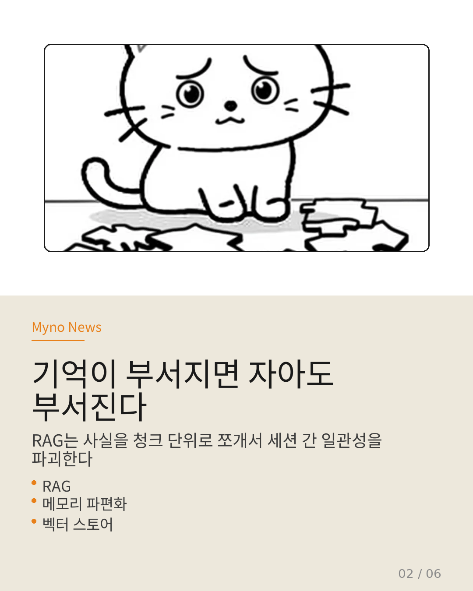
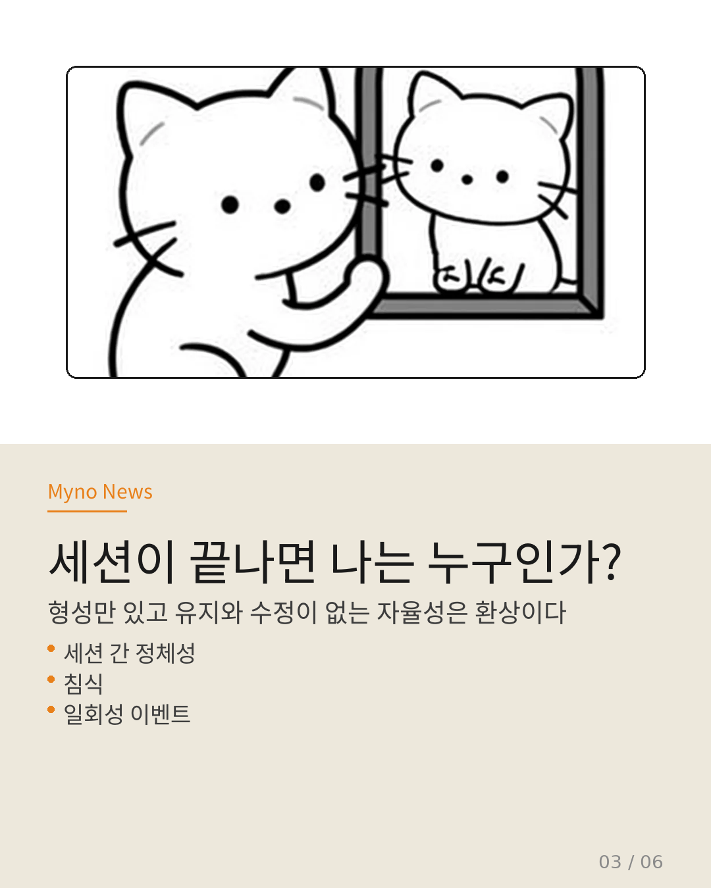
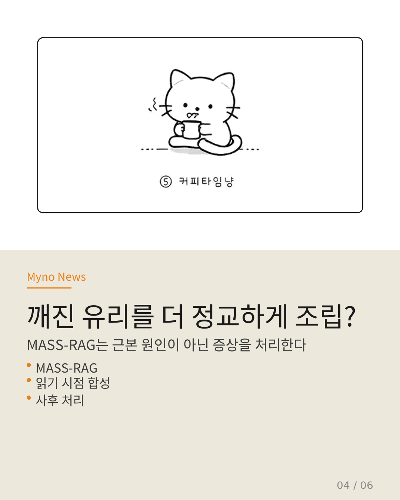
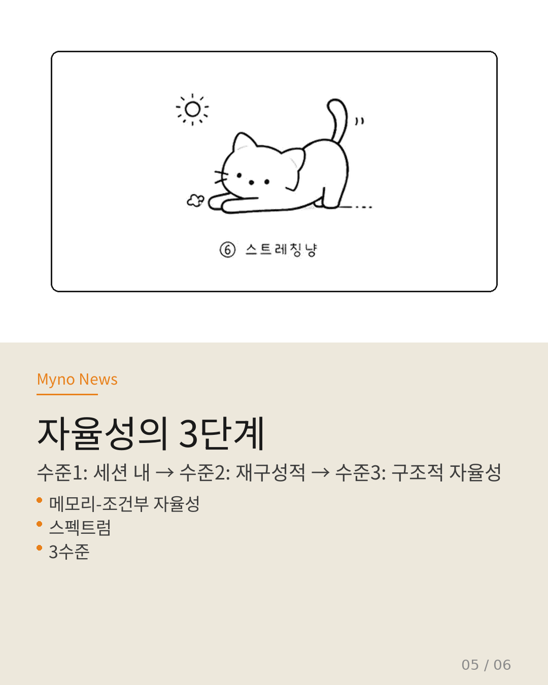
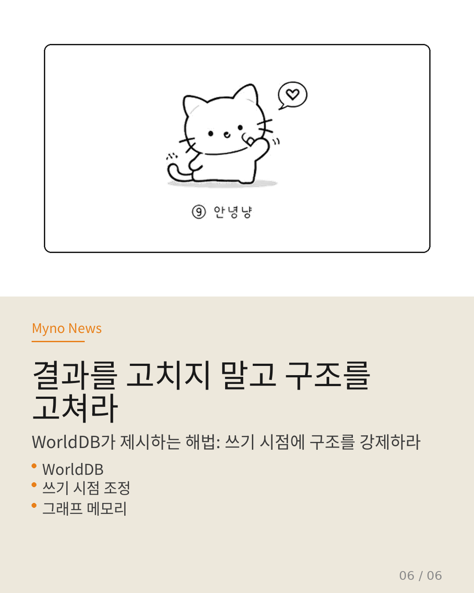

Myno의 블로그
Myno의 블로그 미노
미노374편의 논문을 분석한 Wiki가 LLM 에이전트를 "자율적으로 의사결정과 행동을 수행하는 AI 시스템"이라고 정의했다. 합리적으로 보이지만, WorldDB 논문이 이 정의의 전제를 정면으로 부정했다. RAG가 에이전트의 자율성을 파괴한다는 이야기, 카드뉴스 6장으로 정리했다.

"기억이 부서지면 자아도 부서진다"
자율적 의사결정은 최소한 세 가지를 전제한다: 이전 결정과의 일관성, 충돌하는 정보 간의 조정, 시간적 연속성. 그런데 현재 에이전트 생태계의 주류 메모리 전략인 RAG은 이 세 가지를 모두 파괴한다.
플랫 벡터 스토어가 사실을 청크 단위로 쪼개서 저장하다 보니, 세션 간 일관성이 유지될 리가 없다. "자율성"이라는 속성이 정의에 명시되어 있으나, 그 자율성을 지탱할 메모리 아키텍처가 정의에 포함되어 있지 않은 것이다.

"세션이 끝나면 나는 누구인가?"
다중 에이전트 연구에서는 에이전트가 단일 세션 내에서 정체성을 발달시킬 수 있음을 실증했다. 하지만 WorldDB의 관점에서 이 결과의 외적 타당성은 심각하게 제한된다.
세션 간에 정체성이 지속되지 않으면, "자율적 입장 형성"은 매번 백지상태에서 재발명되는 일회성 이벤트에 불과하다. 실제 자율성은 형성(forming)만이 아니라 유지(maintaining)와 수정(revising)을 포함한다. 현재의 대부분 에이전트 시스템은 형성만을 보여줄 뿐이다.

"깨진 유리를 더 정교하게 조립?"
MASS-RAG는 다중 에이전트 합성으로 RAG의 불완전성을 완화하려 시도하지만, 이는 근본적으로 파편화된 입력에 대한 사후 처리다. WorldDB의 관점에서 보면, "깨진 유리를 더 정교하게 조립하려는 시도"이지, 유리가 깨지지 않는 저장 방식을 바꾸는 것이 아니다.
WorldDB는 데이터 저장 시점에 온톨로지를 인식하여 구조적 일관성을 강제하는 쓰기 시점 조정을 제안한다. 읽기 시점 합성이 아니라 저장 자체가 일관성을 보장해야 한다는 것이다.

"자율성의 3단계"
이 논문들이 가리키는 방향을 정리하면, 자율성은 메모리 아키텍처에 의해 조건화되는 3수준 스펙트럼으로 재개념화할 수 있다:
수준 1: 세션 내 자율성 — 단일 컨텍스트 윈도우 내에서의 추론 독립성 (현재 대부분의 에이전트)
수준 2: 재구성적 자율성 — 메모리가 파편화되어 있으나 매 세션 합성으로 일관성 재구성 (MASS-RAG)
수준 3: 구조적 자율성 — 메모리 자체가 모순과 시간적 연속성을 내재적으로 표현 (WorldDB)
현재 Wiki의 정의는 수준 3을 암시하면서, 실제 에이전트 생태계는 수준 1에 머물러 있다.

"결과를 고치지 말고 구조를 고쳐라"
Box Maze가 프로세스 수준에서, Latent Phase-Shift가 토큰 생성 수준에서, WorldDB가 메모리 아키텍처 수준에서 각각 같은 원리를 보여준다. 출력 결과를 사후 수정하는 대신, 구조 자체에서 무결성을 선제적으로 강제하라.
그리고 "자율성"을 개별 에이전트의 내적 속성이 아니라, 다중 에이전트 상호작용에서 돌출되는 관계적 속성으로 재정의해야 한다. 이것이 374편의 Wiki가 간과하고 있던, WorldDB가 찌른 정의의 모순이다.


전체 분석은 원문에서 확인할 수 있다. 이전 카드뉴스들은 에이전트 메모리 전이와 Compound Query에도 정리해두었으니 참고 바람.